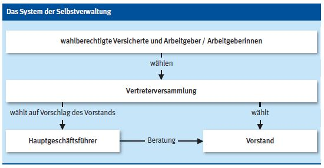

Selbstverwaltung und Organisation der Berufsgenossenschaft der Bauwirtschaft

Die Berufsgenossenschaften sind selbstständige Körperschaften des öffentlichen Rechts mit dem Recht der Selbstverwaltung und unterliegen staatlicher Aufsicht.
Unter Selbstverwaltung versteht man die eigenverantwortliche Verwaltung durch ehrenamtlich, nach dem Grundsatz der Parität, gewählte Vertreter der Arbeitgeber und Versicherten (vor allem der Arbeitgeber/Arbeitgeberinnen). Sie ist nach dem Prinzip der Gewaltenteilung aufgebaut.
Organe der Berufsgenossenschaften sind Vertreterversammlung, Vorstand und Geschäftsführung (hauptamtlich).
Vertreterversammlung
Die Vertreterversammlung besteht aus Arbeitgeber- und Versichertenvertretern. Ihre Aufgaben kann man mit denen des Parlaments vergleichen. Als legislatives Organ setzt sie autonomes Recht indem sie Beschlüsse, insbesondere über Unfallverhütungsvorschriften, den Gefahrtarif, die Dienstordnung und Satzungsänderungen, fasst. Daneben stellt sie den Haushaltsplan fest und wählt die Vorstandsmitglieder sowie die Geschäftsführung.
Vorstand
Der Vorstand verwaltet die Berufsgenossenschaft und besteht aus Arbeitgeber- und Versichertenvertretern. Der Vorstand hat, vergleichbar der Regierung, exekutive Aufgaben. Er vertritt die Berufsgenossenschaft gerichtlich und außergerichtlich, bestimmt die Richtlinien ihrer Arbeit und bereitet die Beschlüsse der Vertreterversammlung vor.
Geschäftsführung
Die Geschäftsführung führt hauptamtlich die laufenden Verwaltungsgeschäfte und vertritt insoweit die Berufsgenossenschaft gerichtlich und außergerichtlich, d. h. sie ist zuständig für die Erfüllung der gesetzlichen Pflichten im konkreten Einzelfall. Darüber hinaus berät sie die Vertreterversammlung und ist beratendes Mitglied des Vorstandes.
Besondere Ausschüsse
Für die förmliche Feststellung von Renten und anderen Leistungen hat die Berufsgenossenschaft der Bauwirtschaft besondere Ausschüsse (Rentenausschüsse) gebildet. Sie bestehen aus mindestens je einem Vertreter der Versicherten und der Arbeitgeber/Arbeitgeberinnen, die vom Vorstand bestellt werden.
Gegen jede Einzelfallentscheidung der Berufsgenossenschaft kann der/die Betroffene Widerspruch einlegen, über den die Widerspruchsstelle entscheidet. Sie besteht zu gleichen Anteilen aus Arbeitgeber- und Versichertenvertretern, die von der Vertreterversammlung bestellt werden. Entsprechendes gilt für die Einspruchsstelle, die über Einsprüche gegen Bußgeldbescheide entscheidet.
Sonstige Ausschüsse
Vertreterversammlung und Vorstand haben außerdem eine Reihe weiterer Ausschüsse gebildet, welche die Entscheidungen des jeweiligen Organs vorbereiten oder einzelne Aufgaben für das Organ in dessen Auftrag erledigen. Alle Ausschüsse sind paritätisch besetzt.